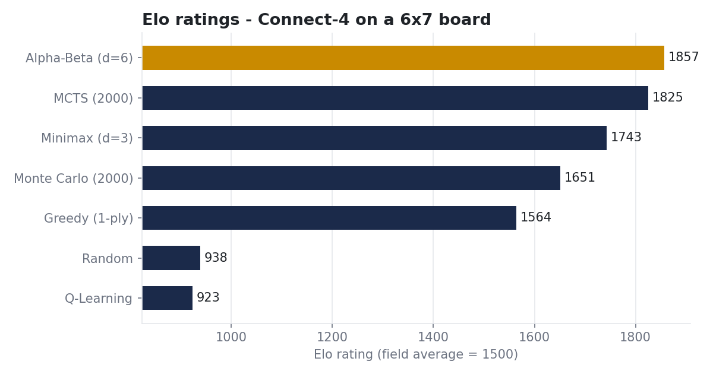
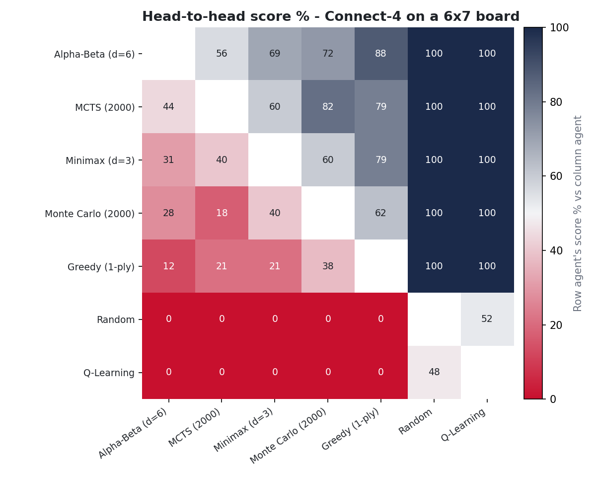
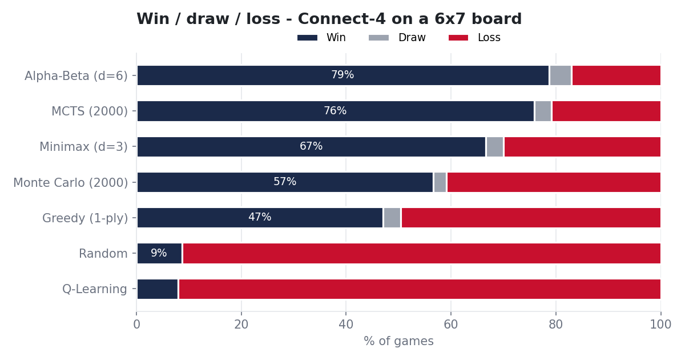
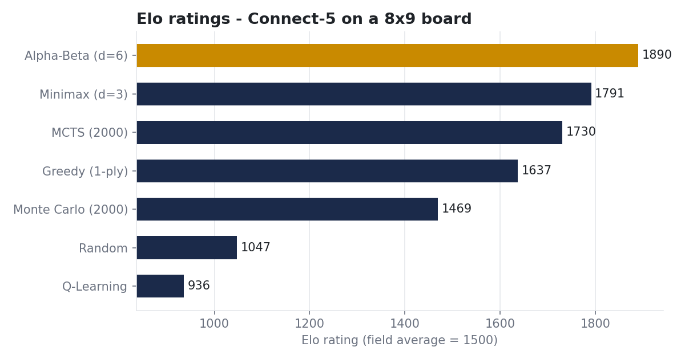
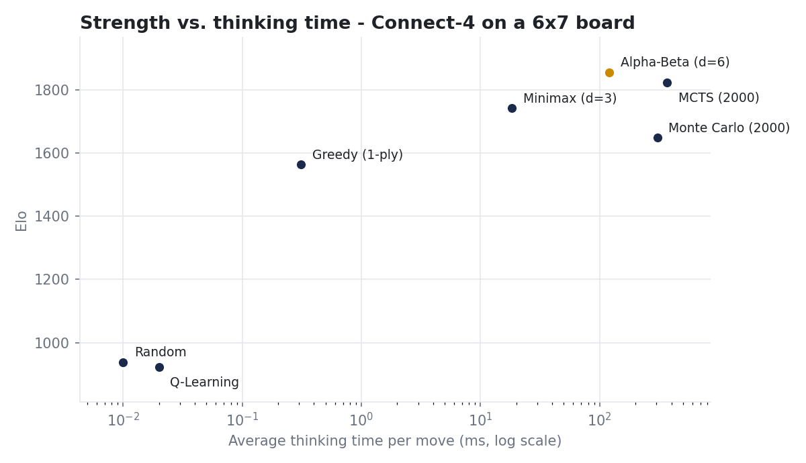
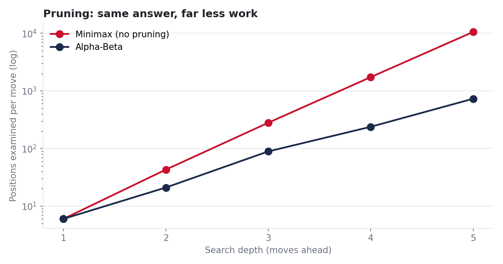
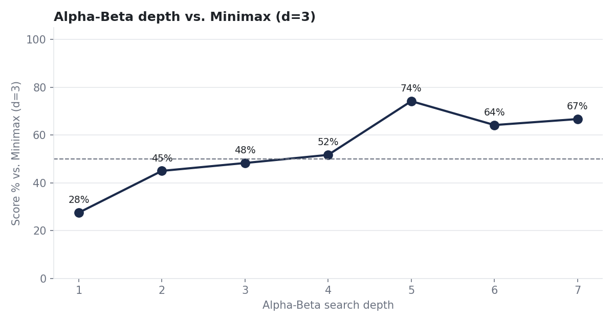
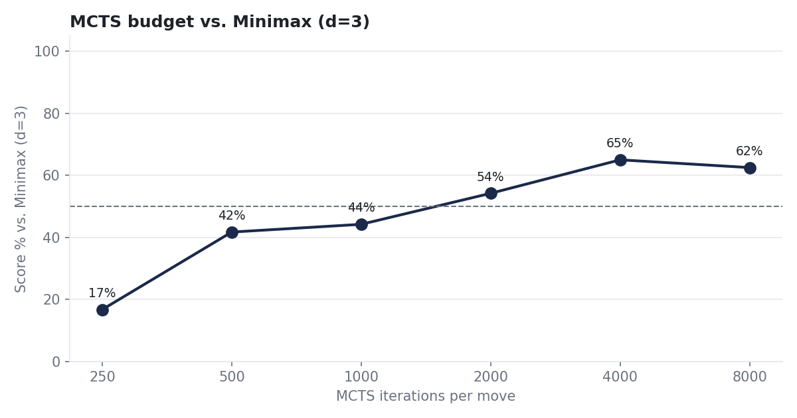

A comparison of seven game-playing algorithms over 1,260 tournament games
I built a Connect-N game (Connect 4 generalised to any board size and any number in a row) and implemented seven algorithms to play it. Every algorithm then played every other one in a round-robin tournament on two boards: classic Connect 4 (6x7) and Connect 5 (8x9).
| Connect 4 (6x7) | Connect 5 (8x9) | |
|---|---|---|
| Best | Alpha-Beta: 1857 Elo, 80.8% score | Alpha-Beta: 1890 Elo, 86.2% score |
| Runner-up | MCTS: 1825 Elo, 77.5% | Minimax: 1791 Elo, 76.2% |
| Worst | Q-Learning: 923 Elo, 7.9% (below Random) | Q-Learning: 936 Elo, 5.0% (below Random) |
connectn/board.py implements Connect-N with a bitboard: each player's pieces are stored as the bits of one integer. Each column gets one spare bit on top, so lines can't wrap around from one column into the next. A line of N pieces in direction d exists exactly when
b & (b >> d) & (b >> 2d) & ... & (b >> (N-1)d) != 0
with d = 1 (vertical), rows+1 (horizontal) and rows / rows+2 (the two diagonals). A win check is therefore a handful of integer operations. That speed is what made 1,260 full AI-vs-AI games, plus the experiments, feasible in pure Python. A full random game takes about 0.1 ms.
The engine supports any rows x cols board and any N. play.py lets a human play against any of the algorithms, or watch two of them play each other.
I picked the seven algorithms to cover the four classic families of game AI: baselines, search, sampling and learning. Search and sampling algorithms get a fixed amount of computation per move (a search depth or a number of simulations), not a time limit. That makes the results reproducible on any machine.
The heuristic (shared with Minimax and Alpha-Beta): look at every possible N-length line on the board. If a line holds only my pieces, add a weight that grows steeply with how many pieces it has (1, 4, 16, ... and 1,000 for N-1 in a row). If it holds only the opponent's pieces, subtract the same weight. Lines with both colours are dead and score nothing. A small bonus goes to centre-column pieces, which take part in the most lines.
How: each iteration runs four phases:
wins/visits + 1.41 * sqrt(ln(parent visits) / visits). This UCT rule balances exploiting good moves with exploring rarely tried ones.After 2,000 iterations it plays the most-visited move.
Why: it is the modern successor to flat Monte Carlo (and part of AlphaGo). It spends its simulations on promising lines instead of evenly, so it can see that a move which looks good has a refutation. It gets the same 2,000 simulations as flat Monte Carlo, so comparing the two isolates the value of the tree.
Q[position][column]. It trains by playing 50,000 games against itself, choosing the best-known move most of the time and a random move with probability epsilon (decaying from 0.2 to 0.05) to explore. After each move it updates Q[s][a] += 0.3 * (target - Q[s][a]), where the target is +1 for a winning move, 0 for a draw, and otherwise minus the opponent's best value in the next position (negamax form). In a game it plays the highest-valued column. For a position it has never seen, it has no information and plays randomly.Round robin. All 21 pairings were played: 40 games per pairing in Connect 4 (840 games) and 20 games per pairing in Connect 5 (420 games), on 6 CPU cores.
Openings and colours. Each pair of games starts from a random 2-move opening and is played twice, once with each algorithm moving first. All pairings use the same list of openings.
A lesson learned along the way. In my first run, games didn't use random openings. Minimax, Alpha-Beta and Greedy are nearly deterministic, so they kept replaying the same game. Some pairings produced only 2 distinct games out of 20, and the results were distorted: Minimax at depth 3 appeared to beat Alpha-Beta at depth 6. A depth-scaling experiment gave a nonsensical zig-zag, which exposed the problem. I switched to the opening scheme above, which is the standard fix used in chess-engine testing, and re-ran everything. Every pairing now has 20 distinct games out of 20, and all the results below come from that corrected run.
Ratings. Score % counts a win as 1 and a draw as 0.5. Elo ratings were fitted to all games at once with a Bradley-Terry model (field average = 1500). A 100-point gap means the stronger side is expected to score about 64%.
Fairness check. In Connect 4, the first player won 48.3% of games, the second player 49.3%, and 2.4% were draws. The opening scheme removes the first-move advantage from the comparison.
| Rank | Algorithm | Elo | Score | W-D-L | ms / move |
|---|---|---|---|---|---|
| 1 | Alpha-Beta (d=6) | 1857 | 80.8% | 189-10-41 | 121 |
| 2 | MCTS (2,000) | 1825 | 77.5% | 182-8-50 | 369 |
| 3 | Minimax (d=3) | 1743 | 68.3% | 160-8-72 | 18 |
| 4 | Monte Carlo (2,000) | 1651 | 57.9% | 136-6-98 | 305 |
| 5 | Greedy | 1564 | 48.8% | 113-8-119 | 0.31 |
| 6 | Random | 938 | 8.8% | 21-0-219 | 0.01 |
| 7 | Q-Learning | 923 | 7.9% | 19-0-221 | 0.02 |


The head-to-head matrix shows an almost perfect pecking order. Each algorithm beats everything below it in the table. Alpha-Beta's row is positive everywhere: 56% vs MCTS, 69% vs Minimax, 73% vs Monte Carlo, 88% vs Greedy and 100% vs Random and Q-Learning. Every search and sampling algorithm won every single game against Random and Q-Learning.

| Rank | Algorithm | Elo | Score | W-D-L | ms / move | Connect 4 rank |
|---|---|---|---|---|---|---|
| 1 | Alpha-Beta (d=6) | 1890 | 86.2% | 98-11-11 | 527 | 1 |
| 2 | Minimax (d=3) | 1791 | 76.2% | 89-5-26 | 60 | 3 |
| 3 | MCTS (2,000) | 1730 | 69.6% | 80-7-33 | 654 | 2 |
| 4 | Greedy | 1637 | 59.2% | 65-12-43 | 0.65 | 5 |
| 5 | Monte Carlo (2,000) | 1469 | 42.1% | 49-3-68 | 633 | 4 |
| 6 | Random | 1047 | 11.7% | 14-0-106 | 0.01 | 6 |
| 7 | Q-Learning | 936 | 5.0% | 6-0-114 | 0.02 | 7 |

On the bigger board, Alpha-Beta's lead grows: 72.5% against its closest rival, Minimax. The two sampling methods drop. MCTS falls from 2nd to 3rd, and flat Monte Carlo falls below Greedy. Random playouts of 40+ moves on a 72-square board say much less about who is really winning, so their estimates get noisier. The heuristic-guided searchers don't have that problem.

Alpha-Beta is the strongest player and needs only a third of MCTS's thinking time (121 ms vs 369 ms per move in Connect 4). Minimax, at 18 ms per move, gives the most strength per millisecond. Greedy is nearly free (0.3 ms) and is a respectable mid-table player. Thinking time is single-core Python on the test machine. Only the relative sizes matter.
Nodes examined per move, averaged over 25 mid-game positions:
| Depth | Minimax | Alpha-Beta | Saving |
|---|---|---|---|
| 1 | 6 | 6 | 1x |
| 2 | 43 | 21 | 2x |
| 3 | 280 | 89 | 3x |
| 4 | 1,732 | 238 | 7x |
| 5 | 10,541 | 730 | 14x |

The saving grows with every extra level. That is why Alpha-Beta could afford depth 6 in the tournament while Minimax was held to depth 3.
Alpha-Beta at depths 1 to 7 played Minimax (depth 3), 60 games per depth.
| Depth | 1 | 2 | 3 | 4 | 5 | 6 | 7 |
|---|---|---|---|---|---|---|---|
| Score vs Minimax d=3 | 27.5% | 45.0% | 48.3% | 51.7% | 74.2% | 64.2% | 66.7% |
| ms / move | 0.5 | 1.5 | 5.4 | 15 | 39 | 87 | 188 |

At depth 3, Alpha-Beta is Minimax with less work, and it scores 48%, close to the expected 50%. That is a good sanity check. Strength rises with depth and levels off at about 65-75% from depth 5. With 60 games, each point carries roughly ±6 points of noise, so the dip at depth 6 is within noise.
| Simulations / move | 250 | 500 | 1,000 | 2,000 | 4,000 | 8,000 |
|---|---|---|---|---|---|---|
| Score vs Minimax d=3 | 16.7% | 41.7% | 44.2% | 54.2% | 65.0% | 62.5% |
| ms / move | 44 | 75 | 152 | 298 | 614 | 1,181 |

MCTS is weak with a small budget, overtakes Minimax at about 2,000 simulations, and levels off at 4,000-8,000. Each doubling of the budget doubles the thinking time for a smaller gain.
Alpha-Beta is the clear overall winner:
The one caveat: on classic Connect 4 its edge over MCTS is real but modest (56% to 44% head-to-head, a 32-point Elo gap). "By far" describes the overall picture and Connect 5, not every single matchup.
Why it wins. It combines the two things that matter most in a tactical game like Connect-N:
A sensible heuristic (counting open lines) guides it in positions too deep to calculate to the end. As the board grows, this guidance matters more and random playouts matter less, which is why its lead grows on Connect 5.
Random is the floor by design, so the meaningful "worst algorithm" is the one that should have done better and didn't: tabular Q-Learning. It finished last, below Random, on both boards: 7.9% vs Random's 8.8% in Connect 4, and 5.0% vs 11.7% in Connect 5. It lost to Random head-to-head in Connect 5 (30%) and was level with it in Connect 4 (47.5%). Apart from its games against Random, it never won a single game against any algorithm.
Why it fails:
What would fix it: replacing the table with a function approximator, such as a neural network that generalises between similar positions, and combining learning with search, as AlphaZero does. That needs orders of magnitude more computation than a fair, laptop-scale comparison allows. The result is a good illustration of why those techniques were necessary.
python tournament.py # both round robins, ~25 min on 6 cores
python experiments.py # pruning + depth + MCTS budget experiments, ~10 min
python analyze.py # standings, Elo, charts
cd presentation && node build_deck.js
Raw data: results/connect4_games.csv and results/connect5_games.csv contain one row per game, with both players, the opening, the full move list, the winner, the game length and thinking times. Summaries are in results/*_summary.json.